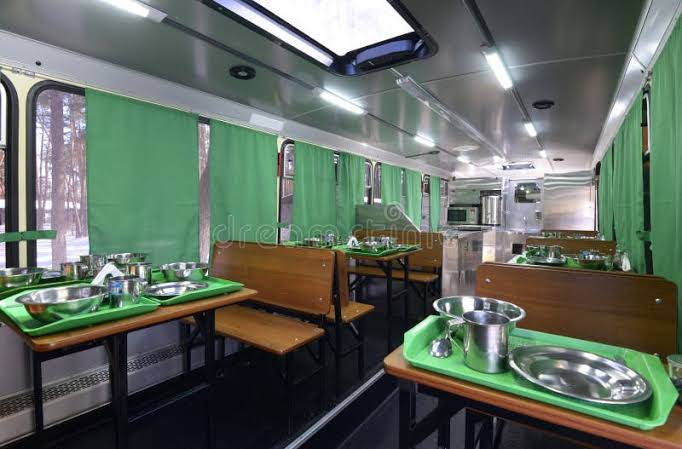
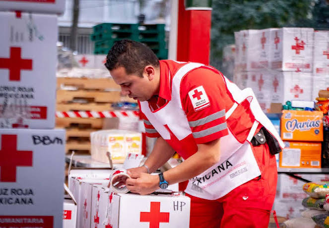
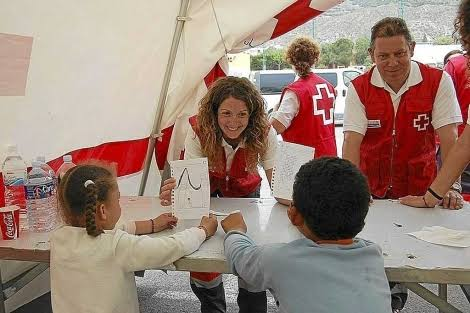

En RAS llevamos adelante iniciativas concretas para transformar la realidad de quienes más lo necesitan. Nuestros programas están diseñados para brindar alivio inmediato y construir oportunidades a futuro.

En nuestros comedores móviles, recorremos distintos barrios brindando alimentos calientes a personas en situación de calle. Además de la asistencia alimentaria, buscamos generar un espacio de contención y acompañamiento, escuchando a cada persona y orientándolas hacia otros recursos disponibles. Como voluntario, vas a poder poner manos a la obra en la cocina preparando viandas (¡no hace falta ser un profesional, solo cocinar con amor!), o bien sumarte a los recorridos por el territorio para distribuir las porciones y compartir un momento humano y cercano con la comunidad. También podés darnos una mano clave en la logística, organizando y cargando insumos en nuestros vehículos antes de cada salida para que todo funcione a la perfección.
Este es el corazón de nuestra red de asistencia básica. Recolectamos, clasificamos y distribuimos alimentos no perecederos para abastecer familias en riesgo social y a otros comedores comunitarios aliados. Buscamos garantizar que ninguna mesa se quede vacía, combatiendo la inseguridad alimentaria de forma sostenida. Si te sumás a este programa, tu tarea será fundamental en nuestra sede, donde nos ayudarás a recibir las donaciones, revisar las fechas de caducidad y armar las "Cajas Solidarias" para las familias. Además, vas a poder participar activamente en la gestión de colectas especiales en supermercados o eventos, y acompañarnos en la distribución directa de los alimentos a quienes forman parte de nuestra red de asistencia, asegurando que el plato llegue a la mesa.


Creemos que la educación es la llave para un futuro digno, pero la brecha digital deja a muchos chicos atrás. Este programa se enfoca en reacondicionar equipos tecnológicos (computadoras, tablets) y proveer acceso a internet a escuelas rurales o de bajos recursos, además de brindar talleres de alfabetización digital básica. En este espacio, tu rol puede ir desde brindar soporte técnico solidario, reparando y configurando las computadoras donadas, hasta convertirte en un mentor digital que acompaña a niños y adultos en sus primeros pasos con la tecnología o en el armado de su CV. También podés colaborar en la recolección de equipos, ayudándonos a contactar empresas y particulares dispuestos a donar tecnología en desuso para que juntos sigamos achicando la brecha digital.